1 이원배치 분산분석 (Two-way ANOVA)
1.1 이원배치 분산분석이란?
1.1.1 이원배치 분산분석은 무엇이 다를까?
앞서 우리는 일원배치 분산분석을 공부했습니다. 앞에서 실습했던 내용을 정리해 보면 Figure 1.1 에 잘 나타나 있습니다.
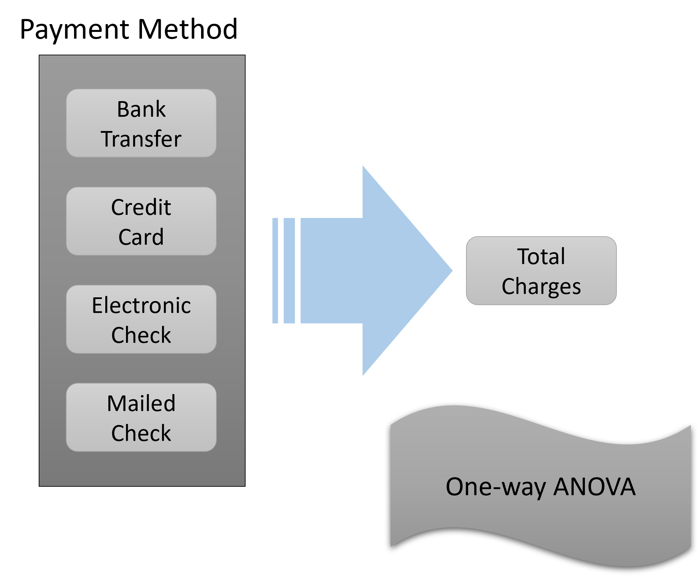
Figure 1.1 을 보면 종속변수는 연속변수 형태인 Total charges였습니다. 그리고 하나의 독립변수인 Payment method는 총 4 개의 그룹을 가지고 있었습니다. 우리는 이 4 개의 그룹에 따라서 종속변수인 Total charges가 변화가 있는지 없는지 살펴보았습니다. 이를 위해 일원배치 분산분석 (One-way ANOVA)를 했던 것이지요. 이제 우리는 여기에 한 개의 독립변수를 추가하여 이원배치 분산분석 (Two-way ANOVA)를 할 것입니다. 가장 마지막에 실습할 내용은 Figure 1.2 에 나타나 있습니다.
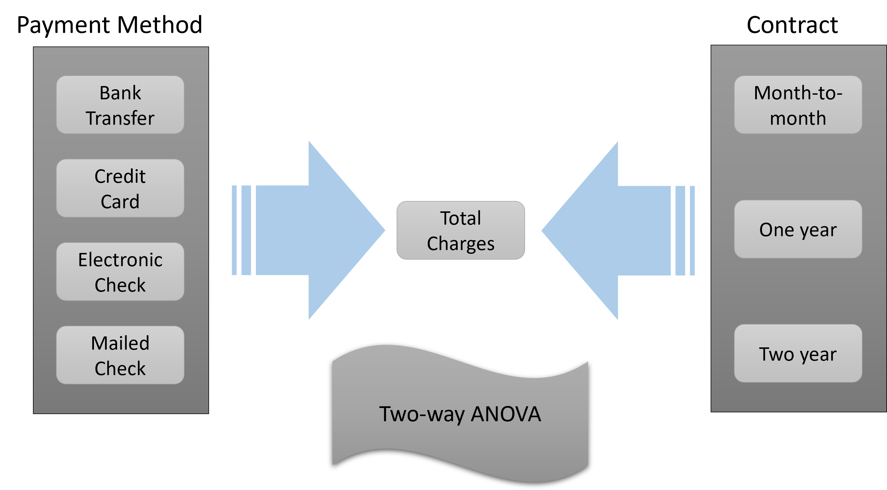
Figure 1.2 에서 보이듯 우리는 추가적으로 한 개의 독립변수를 더 사용할 것입니다. 바로 Contract라는 변수입니다. 이 변수가 의미하는 것은 고객이 계약한 서비스 기간입니다. 여기에는 세 가지의 그룹이 있습니다. Month-to-month, One-year, Two-year입니다. 이제 우리는 앞서 Payment method의 4 개의 그룹에 따라 종속변수인 Total charges가 같은지 다른지 보았던 거세 더하여 이제는 Contract의 3 개의 그룹에 따라서 종속변수가 어떻게 변하는지 또한 보고자 하는 것입니다.
1.1.2 Main Effect (주효과) & Interaction Effect(상호작용)
이처럼 두 개의 독립변수의 종속변수에 대한 직접적인 영향력을 주효과 혹은 Main effect라고 부릅니다. 두 개의 독립변수가 있으니 당연히 Two-way ANOVA에는 두 개의 Main effect가 있다고 생각할 수 있겠습니다. 그러나 독립변수가 한 개 늘어나면서 일원배치 분산분석에는 없었던 것이 하나 늘어납니다. 바로 Interaction effect (상호작용/교호작용)입니다. Interaction effect가 무엇일까요? 정의는 일단 이렇습니다. 한 독립변수의 Main effect가 다른 독립변수의 level (=group)에 따라 원래의 linear relationship이 non-linear 하게 변하는 경우를 말합니다.
이게 무슨 뜻일까요?
먼저, Linear relationship 부터 알아봅시다. Linear relationship이란 우리말로 선형관계라고 합니다. 여기서 선형은 직선을 의미 합니다. 독립변수와 종속변수의 관계가 (직)선의 관계라고 이미 전제하는 겁니다. 사실 이미 우리가 배웠던 t-test나 One-way ANOVA에도 (직)선 관계는 이미 전제되어 있었습니다. 다만, 여러분들의 이해를 돕기 위해 굳이 이야기 하지 않았을 뿐입니다. 기본적으로 앞으로 우리가 하게 될 거의 모든 통계적 분석은 대부분 선형관계를 전제 한다고 보면 됩니다.
이제 우리는 선형관계를 이용해 Interaction effect를 그림을 이용해서 이해할 것입니다. 다음에 등장하는 그림들을 잘 보고 설명을 따라 오기 바랍니다. 이해를 위해 One-way ANOVA에서 시작할 것입니다. 한 개의 독립변수가 있고 쉽게 이해하기 위해 한 개의 독립변수는 단 두 개의 그룹(레벨)을 가지고 있다고 가정해 봅시다. 그리고 우리는 두 그룹의 평균값을 아래의 표로 표현할 수 있습니다.
| 구분 | X1의 Level 1 | X1의 Level 2 | X1 Total |
| Mean | 5 | 10 | 7.5 |
Table 1.1 을 그림으로 그려보면 Figure 1.3 입니다. 그림에서 보듯이 두 그룹의 평균값은 점으로 표현되어 있고 그 사이를 점선으로 이어 놓았습니다. 이렇게 한 이유는 두 그룹에 의한 종속변수의 값의 변화가 직선의 관계에 있음을 보여드리기 위함입니다. 이제 여기에 독립변수를 한 개 더 추가하겠습니다. 역시 쉬운 이해를 위해 단 두 개의 그룹만을 가진 독립변수입니다.
| 구분 | X1의 Level 1 | X1의 Level 2 | Mean |
| X2의 Level 1 | 5 | 10 | 7.5 |
| X2의 Level 2 | 3 | 8 | 5.5 |
| Mean | 4 | 9 | 6.5 |
Table 1.2 를 그림으로 나타내면 아래 Figure 1.4 로 표현할 수 있습니다.
Figure 1.4 에서 보는 것처럼 추가된 두 번째 독립변수 X2 역시 종속변수와 직선의 관계를 유지하고 있음을 알 수 있습니다. 뒤에서 설명하겠지만 결론적으로 X1과 종속변수의 선형관계가 추가된 독립변수 X2에 의해서 변화하지 않았고, 또한 X2와 종속변수 사이의 선형관계가 X1이라는 다른 독립변수에 의해 변화하지 않았으므로 이 경우에는 Interaction이 없는 것입니다. 이제 여러 가지 그림을 보면서 다양한 Interaction effect를 이해해 보도록 합시다. 가장 중요한 것은 Interaction effect라는 것이 한 가지 형태가 아니고 매우 다양한 형태로 존재한다는 것입니다.
Figure 1.5 (a) 을 보면 X1의 Main effect는 없으며, X2의 Main effect도 없고, Interaction도 없습니다. Figure 1.5 (b) 는 X1의 Main effect는 유의하나 X2의 Main effect는 없고 Interaction도 없습니다. 이해가 되시나요? 위의 두 그림에서 X1의 Main effect가 하나는 있고 하나는 없는 이유는 Figure 1.5 (a) 에서는 X1의 Level 1에 해당하는 두 점의 평균값과 X1의 Level 2에 해당하는 두 점의 평균값이 같기 때문입니다. 그러나 Figure 1.5 (b) 에서는 X1의 Level 1에 해당하는 두 점의 평균값과 X1의 Level 2에 해당하는 두 점의 평균값이 확연하게 다릅니다. 따라서 유의한 차이가 있다고 볼 수 있습니다. X2의 Main effect가 위의 두 예제에서 모두 없는 이유는 X2의 Level 1에 해당하는 점선으로 연결된 두 점의 평균값과 X2의 Level 2에 해당하는 점선으로 연결된 두 점의 평균값이 동일하기 때문입니다. Figure 1.5 (a) 에서는 그냥 수평의 직선에 해당하는 종속변수의 값에 둘 다가 매칭 될 것이고, Figure 1.5 (b) 에서는 점선의 중간 정도가 두 점의 평균값이 될 텐데, 이 평균값이 Level 1이나 Level2나 동일할 것이기 때문입니다.
그럼 이제 또 다른 예제를 살펴보겠습니다.
Figure 1.6 (a) 의 경우에는 X1의 Main effect는 없으며, X2의 Main effect는 유의하고, Interaction은 없습니다. Figure 1.6 (b) 는 X1의 Main effect는 유의하고 X2의 Main effect도 유의하고 Interaction은 없습니다. 이제 Main effect가 어떤 것은 유의하고 어떤 것은 유의하지 않은지 구분이 좀 되시나요? 더불어 여태 위에서 본 4 가지의 경우 모두 Interaction이 없었습니다. 이제 Interaction이 있는 경우를 좀 살펴보도록 하겠습니다.
Figure 1.7 (a) 는 매우 재미있는 경우입니다. X1의 Main effect는 없으며, X2의 Main effect도 없으나, Interaction은 유의한 경우입니다. Figure 1.7 (b) 은 X1의 Main effect는 없고 X2의 Main effect는 유의하고 Interaction은 있는 경우입니다. Figure 1.7 (a) 에 대해서 설명해 보자면, X1의 Level 1에 해당하는 두 점의 평균값은 두 점의 중간 정도일 것이고 X1의 Level 2에 해당하는 두 점의 평균값 역시 두 점의 중간정도로 같기 때문입니다. X2의 Level 1에 해당하는 점선으로 연결된 두 점의 평균값은 두 선이 교차하는 지점 정도가 될 것이고, X2의 Level 2에 해당하는 점선으로 연결된 두 점의 평균값 역시 두 선이 교차하는 지점이 될 것이므로 두 그룹의 평균값은 동일하기 때문입니다. 그러나 두 선은 분명히 X자로 교차하고 있고 이는 명확히 한 독립변수의 종속변수에 대한 효과가 다른 독립변수에 의해 변화된 것이므로 Interaction은 있는 것입니다.
Figure 1.7 (b) 는 다소 애매한 경우인데, 사실 X1의 Main effect가 없다고 보는 것이 제 의견에는 합리적이라 생각되지만, 보는 사람의 입장에 따라서는 X1의 Main effect가 약간은 있다고 주장할 수도 있습니다. 어쨌든 이와는 별개로 X2의 Main effect는 분명하게 유의하고 Interaction도 유의하다 즉 있다고 보는 것이 맞는다고 판단됩니다. 왜냐하면 두 직선은 분명히 평행하지는 않기 때문에 상호간에 Interaction이 있다고 볼 수 있습니다.
Figure 1.8 (a) 의 경우는 X1의 Main effect는 유의하고 X2의 Main effect는 없습니다. 왜냐하면 X2의 Level 1에 해당하는 점선으로 연결된 두 점의 평균값은 두 선이 교차하는 지점 정도가 될 것이고, X2의 Level 2에 해당하는 점선으로 연결된 두 점의 평균값 역시 두 선이 교차하는 지점이 될 것이므로 두 그룹의 평균값은 동일하기 때문입니다. 그러나 Interaction은 분명하게 있습니다. 왜냐하면 두 직선이 교차하기 때문입니다. 이렇게 교차하는 모양이 되면 무조건 Interaction이 있다고 보시면 됩니다.
Figure 1.8 (b) 의 경우에는 X1과 X2의 Main effect가 둘 다 유의하고 Interaction도 유의합니다. 한 직선은 X축에 평행하게 되어 있으나 한 직선은 그렇지 않기 때문입니다. 이제 Interaction이라는 것이 좀 이해가 되시나요? 마지막으로 두 개의 예제를 더 보겠습니다.
Figure 1.9 (a) 와 Figure 1.9 (b) 은 모두 X1의 Main effect는 없지만 X2의 Main effect는 유의하고 당연히 Interaction도 유의합니다. 이 경우 왜 X1의 Main effect가 없느냐고 하시는 분도 있을 텐데요. X1의 Level 1에 해당하는 두 점의 평균값은 두 점의 중간 정도일 텐데 X1의 Level 2에 해당하는 두 점의 평균값 역시 두 점의 중간정도로 같기 때문입니다. 다만 Figure 1.9 (a) 에서는 X1의 Level 1의 두 점이 일치하는 것이고, Figure 1.9 (b) 에서는 X1의 Level 2에서 두 점이 일치하는 거일 뿐 X1의 두 그룹의 평균값은 동일하게 됩니다. 반면에, X2의 Level 1에 해당하는 점선으로 연결된 두 점의 평균값은 두 선의 중간 지점 정도가 될 것이고, X2의 Level 2에 해당하는 점선으로 연결된 두 점의 평균값 역시 두 선의 중간 지점이 될 것이므로 두 그룹의 평균값은 확연히 달라지기 때문입니다. 물론 둘 다 Interaction은 분명히 유의할 것입니다.
결론적으로, Interaction 이란, 한 독립변수의 종속변수에 대한 영향관계가 다른 독립변수의 level(=group)에 따라 변할 경우, 우리는 이를 Interaction effect (상호작용/교호작용)이 있다고 합니다. 이 Interaction은 연구/조사에 있어서 매우 중요합니다. 왜냐하면, 기존에 이러한 Interaction이 존재한다는 것이 알려지지 않았다면 두 독립변수를 이용하여 다양한 결과를 예측할 수 있는 가능하기 때문입니다. 기존에 원인을 알 수 없었던 종속변수의 결과(반응)에 대해 그 원인을 알 수 있는 기본이 될 수 있습니다.
이제 우리는 이원배치 분산분석의 기본과 일원배치 분산분석과 다른 점을 알아보았습니다. 이제 조금 더 Two-way ANOVA에 대해 알아보도록 하겠습니다.
1.2 이원배치 분산분석 전에 알아야 할 것들
1.2.1 ANOVA가 t-test를 대신한다면?
다소 뜬금없는 질문이긴 한데 만약 그룹이 2 개인 경우 t-test가 아닌 일원배치 분산분석을 하면 어떻게 될까요? 가능하긴 할까요? 물론 가능합니다. 3 개 이상의 그룹의 평균값을 비교할 수 있는 ANOVA인데 겨우 두 개의 그룹의 평균값을 비교하지 못할 리가 없죠. 궁금하시다면 앞서 t-test에서 사용했던 샘플 데이터로 ANOVA를 해보길 바랍니다. 직접 해보는 것만큼 좋은 공부가 없습니다. 다만 한 가지 재미있는 사실은 결과를 t-test와 비교해 보면 \({t-value}^2 = \text{F-value}\)가 되는 것을 아실 수 있을 겁니다.
1.2.2 이원배치 분산분석의 F-value
앞에서 공부한 일원배치 분산분석을 다시 떠 올려 봅시다. 분산분석은 F-value를 구하는 것이라고 했고 이 F-value는 Between Variance와 Within Variance의 비율이었습니다. 일원배치 분산분석은 사실상 Main effect가 한 개이기 때문에 F-value가 한 개 필요했습니다. 그렇다면 이원배치 분산분석에서는 F-value가 몇 개 필요할까요? 잠시 생각해 봅시다.
일단 이원배치 분산분석은 독립변수가 두 개이므로 Main effect가 두 개 이기 때문에 F-value가 두 개 필요합니다. 여기에 더해서 우리는 앞서 Interaction effect가 이원배치 분산분석에 추가되었다는 사실을 배웠습니다. 그러므로 Interaction effect가 유의한지 아닌지 알기 위해서는 Interaction effect를 검정하기 위한 F-value가 한 개 더 필요합니다. 그러므로 이원배치 분산분석에서는 총 3 개의 F-value가 필요합니다. Figure 1.10 에서 볼 수 있듯이 2 개의 Main effect용 F-value와 한 개의 Interaction effect용 F-value가 필요합니다.
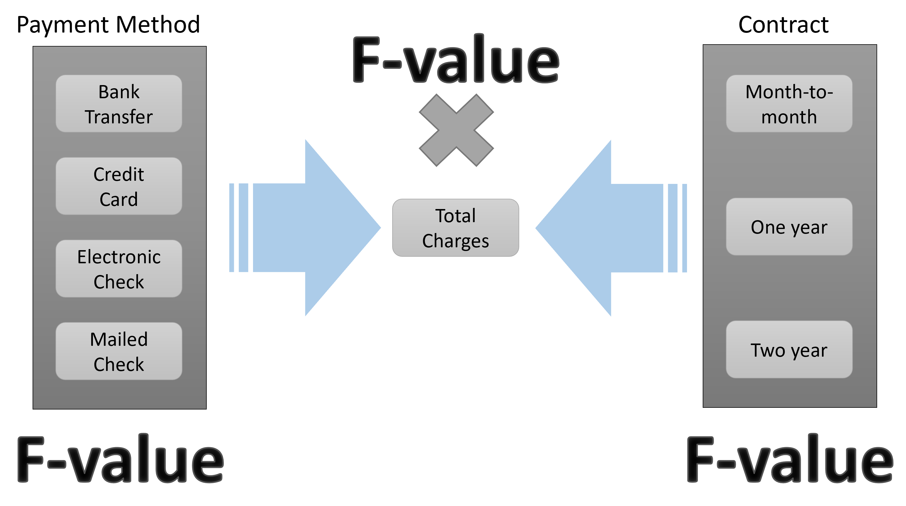
그렇다면 총 몇 개의 Between Variance와 Within Variance가 필요할까요?
먼저 Between Variance는 당연히 총 3 개가 필요합니다. 왜냐하면 우리의 관심사는 언제나 F-value의 분자 부분인 Between Variance이기 때문입니다. 이 Between Variance가 충분히 크다는 것은 적어도 한 그룹의 평균값이 전체 평균값에서 멀어져 있다는 의미가 되기 때문이지요. 문제는 그렇다면 몇 개의 Within Variance가 필요한지 입니다. 깊게 생각해 보지 않는다면 보통 여기서 3 개의 Within Variance가 필요하다고 답하게 됩니다. 그런데 다시 한 번 생각해 봅시다. 일단 F-value에서 Within Variance의 역할이 무엇인가요? 계속 반복하듯이 Between Variance만으로는 이게 큰지 작은지 알 수 없기 때문에 비교대상이 필요하고 그 비교대상으로 Within Variance를 사용한다고 했습니다. 그렇다면 이 Within Variance는 일종의 비교대상이자 기준이 되는 것입니다. 만약 기준이 세 개의 Between Variance에 대해서 다르게 적용된다면 이게 올바른 것일까요? 아닙니다. 기준은 한 개면 충분하고 그래야만 합니다. 그래야 기준으로서 객관성을 유지할 수 있고 기준이 되는 비교대상으로서 역할을 할 수 있는 것이기 때문입니다. 따라서 Between Variance 3개와 Within Variance 1 개가 필요합니다. 총 4 개의 Variance가 있으면 이원배치 분산분석을 할 수 있는 것입니다.
\[F-value_{Main \; effect1} = \frac{Between \; Variance_{Main \; effect1}}{Within \; Variance} = \frac{\frac{SS_{Main \; effect1}}{df_1\;of\;Main\;effect1}}{\frac{SS_{Within}}{df_2\;of\;Within\;Variance}}\]
\[F-value_{Main \; effect2} = \frac{Between \; Variance_{Main \; effect2}}{Within \; Variance} = \frac{\frac{SS_{Main \; effect2}}{df_1\;of\;Main\;effect2}}{\frac{SS_{Within}}{df_2\;of\;Within\;Variance}}\]
\[F-value_{Interaction \; effect} = \frac{Between \; Variance_{Interaction \; effect}}{Within \; Variance} = \frac{\frac{SS_{Interaction \; effect}}{df_1\;of\;Interaction\;effect}}{\frac{SS_{Within}}{df_2\;of\;Within\;Variance}}\]
우리가 계산해야 할 세 개의 F-value를 위에 표현해 보았습니다. 좀 정리가 되시나요?
그렇다면 이원배치 분산분석을 위한 통계적 가설은 몇 개가 필요할까요? 당연히 세 개가 필요합니다. 첫 번째 독립변수의 Main effect에 대한 통계적 가설은 아래와 같습니다.
\[ H_{01}: \mu_{11} = \mu_{12} = \; ... \; = \mu_{1k} \; (k는 그룹의 갯수)\]
\[ H_{a1}: \mu_{1i} \neq \mu_{1j} \; for \; some \; i, j\]
동일한 방법으로 두 번째 독립변수의 Main effect에 대한 통계적 가설은 아래와 같습니다.
\[ H_{02}: \mu_{21} = \mu_{22} = \; ... \; = \mu_{2k} \; (k는 그룹의 갯수)\]
\[ H_{a2}: \mu_{2i} \neq \mu_{2j} \; for \; some \; i, j\]
마지막으로 Interaction effect에 대한 통계적 가설은 다음과 같습니다.
\[ H_{03}: \text{The interaction effect does not exist}\]
\[ H_{a3}: \text{The interaction effect exists}\]
여기서 주의할 점이 있습니다. 앞서 우리는 일원배치 분산분석에서 F-value가 유의하다는 것은 적어도 한 그룹의 평균값이 다르다는 의미이고, 이는 자세한 그룹별 차이를 알 수 없으므로 사후검정을 해야 한다고 이야기 했습니다. 이와 더불어 그래프를 그리는 것이 좋다는 이야기도 했습니다. 이원배치 분산분석에서도 이러한 원칙은 동일합니다. 다만 이 원칙은 두 개의 Main effect에 대한 F-value가 유의할 경우에만 동일합니다. Interaction effect를 확인하기 위한 F-value가 유의할 경우 이는 Interaction effect가 있다는 의미인데 문제는 사후검정을 할 경우 상당히 복잡한 문제가 발생합니다. 물론 사후검정을 할 필요가 있기는 하지만 경우에 따라서는 무의한 상황이 벌어지기도 합니다. 예를 들어 두 독립변수가 각각 3 개의 그룹을 가지고 있을 경우 두 변수의 조합에 의한 세부 그룹은 \(3 \times 3 = 9\)가 됩니다. 즉 9개의 세부 그룹이 존재하게 되고 이 9개의 그룹을 1대1로 비교하려면 \(9 \times 8 \div 2 = 36\)이 되어 총 36개의 조합을 비교하는 상황이 벌어집니다. 사실 이렇게 많은 조합의 비교결과를 리포트 하는 것은 정신없기만 하고 중요한 내용을 오히려 빠뜨릴 수 있습니다. 그래서 보통 Interaction effect가 유의할 경우 사후검정은 연구자가 따로 해보기는 하지만 리포트하지는 않고 그래프를 반드시 리포트 하면서 해석을 할 때 사후검정 결과를 참고하는 것입니다. 엄청나게 긴 표에 들어 있는 많은 양의 정보보다 그림 한 장이 더 명쾌하기 때문입니다.
이제 이원배치 분산분석의 F-value를 계산해 봅시다. 조금만 더 힘내기 바랍니다.
1.3 이원배치 분산분석의 F-vlaue를 계산해 보자
1.3.1 이원배치 분산분석 예제
이제 손으로 계산 가능한 아주 작은 크기의 예제를 한 가지 이용해서 F-value를 계산해 보겠습니다. 현실에서는 있을 수 없는 경우라는 점을 먼저 말씀드립니다. 왜냐하면 샘플 사이즈가 너무 작기 때문이지요. 여기서는 우리가 이원배치 분산분석의 F-value를 손으로 계산해서 구한다는 것을 목적으로 하기 때문에 가능한 것입니다.
예제는 다음과 같습니다. 우리는 이제 두 가지 종류의 세탁세제의 세척력을 비교하고자 합니다. 다만 세제의 세척력이 물의 온도에 영향을 받는다고 알려져 있어서 세가지 종류의 물의 온도를 이용해 실험할 예정입니다. 두 세제의 이름은 Super와 Best이고, 물의 온도는 Cold, Warm, Hot 이렇게 나누기로 했습니다. 아래의 Table 1.3 를 보면 총 6개의 케이스(셀)가 있고 각 케이스별로 4회의 실험을 했습니다. 일단 숫자가 큰 것이 세척력이 좋은 것이라고 봅시다.
| Cold | Warm | Hot | |
|---|---|---|---|
| Super | 4 / 5 / 6 / 5 | 7 / 9 / 8 / 12 | 10 / 12 / 11 / 9 |
| Best | 6 / 6 / 4 / 4 | 13 / 15 / 12 / 12 | 12 / 13 / 10 / 13 |
1.3.2 이원배치 분산분석의 코딩방법
여기서 잠시 이원배치 분산분석의 코딩에 대해 이야기 하겠습니다. 이미 경험이 있거나 통계를 잘 아시는 분들에게는 불필요 할 수 있으나 초보자에게는 항상 어려운 부분입니다. 앞서 계속해서 반복하는 내용이 있다면 바로 엑셀 시트에서 열(column) 한 개가 변수 한 개이다는 것입니다. 이원배치 분산분석에서 종속변수 한 개와 독립변수 두 개를 가지고 분석을 하기 때문에 당연히 우리는 총 3 개의 열(column)에 코딩을 하면 됩니다. 종속변수에 해당하는 한 개의 열(column)애는 연속변수의 형태를 가진 종속변수를 넣으면 되고, 두 개의 독립변수는 각각 두 개의 열(column)에 코딩합니다. 주의할 점은 첫 번째 독립변수인 세제는 두 가지의 그룹이 있다는 것이므로 한 개의 열(column)에 두 가지의 세제가 코딩되면 됩니다. 마찬가지로 두 번째 독립변수인 물의 온도는 세 가지의 그룹을 가지고 있으므로 한 개의 열(column)에 Cold, Warm, Hot 세 가지의 그룹이 코딩되면 됩니다. 절대 세 가지 그룹을 세 개의 열(column)에 코딩하면 안 됩니다. 마지막으로 Interaction에 대해 궁금해 하실 텐데 분산분석에서는 Interaction을 별도로 코딩하지 않습니다. 통계 프로그램이 알아서 Interaction term을 만들어서 계산해줍니다. 아래의 그림은 코딩된 결과입니다.
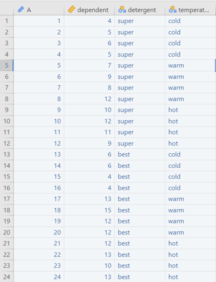
1.3.3 F-value를 계산해 보자
Table 1.4: F-value 계산을 위한 데이터 정리
| Cold | Warm | Hot | |
|---|---|---|---|
| Super | 4 / 5 / 6 / 5 | 7 / 9 / 8 / 12 | 10 / 12 / 11 / 9 |
| Best | 6 / 6 / 4 / 4 | 13 / 15 / 12 / 12 | 12 / 13 / 10 / 13 |
| Cold | Warm | Hot | Mean | |
|---|---|---|---|---|
| Super | 5.0 | 9.0 | 10.5 | 8.2 |
| Best | 5.0 | 13.0 | 12.0 | 10.0 |
| Mean | 5.0 | 11.0 | 11.3 | 9.1 |
계산을 쉽게 하기 위해 데이터 테이블과 별도로 평균값 테이블을 Table 1.4 (b) 에 만들어 보았습니다. 가장 우측의 평균값은 Super 전체와 Best 전체의 평균값이고 가장 아래의 평균값은 Cold, Warm, Hot 전체의 평균값입니다. 마지막으로 가장 우측 아래의 9.1은 데이터 전체의 평균값입니다.
우리가 계산할 총 4 개의 분산 중 첫 번째로 계산할 것은 바로 비교대상이면서 기준이 되는 Within Variance입니다. 앞의 일원배치 분산분석과 마찬가지로 Within Variance란 그룹 내의 분산입니다. 여기서는 총 6개의 그룹이 있다고 볼 수 있습니다. 먼저 분산의 윗부분인 분자부분을 계산하는 방식은 각 값에서 그 그룹의 평균값을 빼고 제곱하여 모두 더하는 방식입니다. 바로 \(SS_{Within}\)입니다.
\[ SS_{Within} = (4-5)^2 + (5-5)^2 + (6-5)^2 + (5-5)^2\] \[+ (7-9)^2 + (9-9)^2 + (8-9)^2 + (12-9)^2\] \[ \; ...\; \] \[+ (12-12)^2 + (13-12)^ + (10-12)^2 + (13-12)^2 = 37.0 \]
이렇게 됩니다. 가능하면 직접 엑셀에 데이터를 넣고 계산해 보실 것을 권해드립니다. 직접 해보는 것만큼 좋은 공부가 없습니다. 이제 다름으로 분산의 아래 부분인 df를 구해 봅시다. \(df_{Within}\)의 공식이 좀 복잡해 보이지만 아래에 있습니다. 일단 \(r\)은 각 셀에서 반복된 실험 횟수입니다. 여기서는 4회이므로 \(r = 4\)입니다. \(k_1\)과 \(k_2\)는 두 독립변수의 그룹의 개수입니다. 그러므로 각각 2와 3이 되어 \(df_{Within} = 18\)입니다.
\[ df_{Within} = (r-1) \times k_1 \times k_2 = 3 \times 2 \times 3 = 18 \]
그러므로 Within Variance는 2.06이 됩니다.
\[ \text{Within Variance} = \frac{SS_{Within}}{df_{Within}} = \frac{37.0}{18.0} = 2.06 \]
그럼 이제 첫 번째 독립변수의 Main effect에 대한 Between Variance를 구해 봅시다. 첫 번째 독립변수는 두 가징 종류의 세탁세제입니다. 이 Between Variance는 두 세탁세제 그룹의 평균값이 전체평균으로부터 얼마나 멀어져 있는 지를 구하는 것입니다. 그러므로 \(SS_{Main \; effect1}\)의 계산은 아래와 같습니다.
\[ SS_{Main \; effect1} = r \times k_2 \times \{(8.2-9.1)^2 + (10.0-9.1)^2\}\] \[= 12 \times \{(8.2-9.1)^2 + (10.0-9.1)^2\} = 20.17 \]
Super의 평균값이 8.2이고 Best의 평균값이 10.0이므로 이 두 값을 전체평균인 9.1로 뺀 뒤에 제곱합니다. 앞의 일원배치 분산분석을 차분하게 직접 계산해 보신분이라면 아시겠지만 만약 아니라면 왜 12를 곱하는지 궁금하실 것입니다. 이는 각 그룹을 살펴보면 Super가 총 12회 실험이 되어 12개의 데이터 값이 있고, Best 역시 총 12회 실험이 되어 12개의 데이터 값이 있기 때문입니다. 한 번만 하면 되지 않겠냐고 생각하실 수 있겠으나 이건 굉장한 오해입니다. 저 평균값 8.2와 10.0은 각각 12개의 데이터의 평균값에서 얻어진 것이므로 위의 제곱합 계산을 12회 한 것이 됩니다. 그러므로 12를 곱해야 합니다.
이제 df를 알아보겠습니다. 여기서 df는 일원배치 분산분석과 동일합니다. 즉, 그룹의 개수에서 1을 빼는 것이지요. 따라서 이 경우에는 df는 1이 됩니다.
\[ df_{Main \; effect1} = k_1 - 1 = 2 - 1 = 1 \]
이제 첫 번째 독립변수의 Main effect에 대한 Between Variance를 구해 보겠습니다.
\[ \text{Between Variance} = MS_{Main \; effect1} = \frac{SS_{Main\;effect1}}{df_{Main\;effect1}} = \frac{20.17}{1} = 20.17 \]
이제는 Between Variance라는 표현보다 \(MS_{Main\;effect1}\) 이런 식의 표현을 주로 사용해보겠습니다. 왜냐하면 세 개의 Between Variance가 있다보니 말이 좀 길어지네요. 그렇다면 다음으로 \(MS_{Main\;effect2}\)를 구해 보겠습니다.
\[ SS_{Main\;effect2} = r \times k_1 \times \{(5.0-9.1)^2 + (11.0-9.1)^2 + (11.3-9.1)^2\}\] \[= 8 \times \{(5.0-9.1)^2 + (11.0-9.1)^2 + (11.3-9.1)^2\} = 200.33 \]
이미 앞에서 한 번 해보았으니 이해가 되시겠지만 여기서 8을 곱하는 이유는 각 그룹당 8번씩의 실험을 해서 총 8개의 데이터가 있기 때문입니다. df 역시 그룹의 개수에서 1을 차감하면 되므로 2가 됩니다.
\[ df_{Main\;effect2} = k_2 - 1 = 3 - 1 =2 \]
이 둘을 나누어 \(MS_{Main\;effect2}\)를 구해보면 아래와 같습니다.
\[ MS_{Main\;effect2} = \frac{SS_{Main\;effect2}}{df_{Main\;effect2}} = \frac{200.33}{2} = 100.17 \]
1.3.4 Interaction effect의 Between Variance를 구해보자
이제 남은 것은 Interaction effect의 Between Variance입니다. 이게 좀 독특합니다. 그래서 이걸 이해하기 어려워 하는 분들이 좀 있지요. 하지만 가만 생각해보면 그다지 어렵지 않습니다. 일단 위의 데이터의 평균값 테이블 Table 1.4 (b) 을 잘 보고 아래의 계산식을 확인하시기 바랍니다.
\[ SS_{Interaction} = r \times \{(5.0-8.2-5.0+9.1)^2 + (9.0-8.2-11.0+9.1)^2 \] \[+ (10.5-8.2-11.3+9.1)^2 + (5.0-10.0-5.0+9.1)^2 \] \[+ (13.0-10.0-11.0+9.1)^2 + (12.0-10.0-11.3+9.1)^2 \} = 16.33 \]
총 6번의 계산이 이루어지는데요. 모두 시작은 각 6개의 셀의 평균값인 5.0, 9.0, 10.5, 5.0, 13.0, 12.0입니다. 원칙은 간단합니다. 각 셀이 걸쳐져 있는 두 그룹의 평균값을 빼고 마지막에 전체평균값인 9.1을 더하는 방식입니다. 예를 들어 첫 번째 계산값은 Super이면서 Cold인 셀인데 이 셀의 평균값은 5.0입니다. 이 5.0에서 Super의 평균값인 8.2와 Cold의 평균값인 5.0을 빼고 마지막에 전체평균인 9.1을 더하는 방식입니다. 이 방식을 모든 6 개의 셀에 다 하는 것입니다. 물론 제곱해서 더해야 하지요. 앞의 r은 역시 4회의 반복실험으로 얻어진 4개의 데이터를 의미합니다. 그렇다면 왜 이런 식으로 구할까요? 좀 더 쉬운 이해를 위해 다음의 예제를 보시면 좀 이해가 되실 것입니다.
위의 Figure 1.12 의 첫 번째 그림(Figure 1.12 (a))은 Interaction이 없는 경우이고 두 번째 그림(Figure 1.12 (b))은 Interaction이 있는 경우입니다. 이 두 개의 경우를 가지고 \(SS_{Interaction}\)을 계산해 보겠습니다. 아래의 표는 두 경우의 평균값을 정리한 것입니다.
Table 1.5: Interaction의 계산 예제
| X1의 Level 1 | X1의 Level 2 | Mean | |
|---|---|---|---|
| X2의 Level 1 | 2 | 4 | 3 |
| X2의 Level 2 | 4 | 6 | 5 |
| Mean | 3 | 5 | 4 |
| X1의 Level 1 | X1의 Level 2 | Mean | |
|---|---|---|---|
| X2의 Level 1 | 2 | 4 | 3 |
| X2의 Level 2 | 4 | 2 | 3 |
| Mean | 3 | 3 | 3 |
이제 그럼 첫 번째 케이스인 Interaction이 없는 경우에 대해서 \(SS_{Interaction}\)을 계산해 보겠습니다.
\[ SS_{Interaction} = (2-3-3+4)^2 + (4-3-5+4)^2 + (4-5-3+4)^2 + (6-5-5+4)^2 = 0 \]
그렇다면 두 번째인 Interaction이 있는 경우는 어떻게 될까요?
\[ SS_{Interaction} = (2-3-3+3)^2 + (4-3-3+3)^2 + (4-3-3+3)^2 + (2-3-3+3)^2 = 4 \]
어떤가요? Interaction이 없는 경우에는 계산이 0으로 딱 떨어집니다. 하지만 Interaction이 있는 경우에는 그렇지 않습니다. 이게 바로 Interaction의 계산법입니다. 이제 마지막으로 df를 알아보겠습니다. Interaction의 df 계산은 좀 복잡합니다.
\[ df_{Interaction} = (k_1 - 1) \times (k_2 - 1) = 2 \times 1 = 2 \]
\[ MS_{Interaction} = \frac{SS_{Interaction}}{df_{Interaction}} = \frac{16.33}{2} = 8.17 \]
이렇게 됩니다. 이제 그럼 정리를 해 보겠습니다.
| SS | df | MS | F-value | p-value | |
|---|---|---|---|---|---|
| Detergent | 20.167 | 1 | 20.167 | 9.81 | 0.0057584 |
| Temperature | 200.333 | 2 | 100.167 | 48.73 | 0.0000001 |
| Interaction | 16.333 | 2 | 8.167 | 3.97 | 0.0372243 |
| Within | 37.000 | 18 | 2.056 | ||
| Total | 273.833 | 23 |
왜 Table 1.6 와 같은 표가 나왔는지 이야기 하자면, 먼저 SS, df, MS는 모두 위에서 계산된 값입니다. 그러니 더 설명은 필요없겠지요. 이제 세 개의 F-value가 어떻게 계산되는지 아래의 내용을 보시기 바랍니다.
\[ F-value_{Detergent(1,18)} = 20.167 \div 2.056 = 9.81 \] \[ F-value_{Temperature(2,18)} = 100.167 \div 2.056 = 48.73 \] \[ F-value_{Interaction(2,18)} = 8.167 \div 2.056 = 3.97 \]
이렇게 계산됩니다. 왜 이렇게 계산되는지는 앞의 일원배치 분산분석을 보셨다면 당연히 아실 것이라 생각하고 더 설명은 안하겠습니다. 위의 p-value를 엑셀에서 구하시려면 역시 fdist라는 엑셀의 함수를 사용하시면 됩니다. 매우 유용합니다.
이제 이원배치 분산분석의 F-value 계산이 끝났습니다. 거의 마무리 되어 가네요. 조금만 더 힘을 내봅시다.
1.4 이원배치 분산분석의 사후검정
1.4.1 이원배치 분산분석 결과표
우리는 앞서 손으로 계산 가능한 아주 작은 데이터를 이용해 F-value를 구하고 유의성 확인까지 했습니다. 이제 아래의 Figure 1.13 는 Jamovi로 동일한 데이터를 분석한 결과입니다. 우리가 위에서 계산한 것과 동일한 결과를 보여주고 있음을 알 수 있습니다. 두 개의 Main effect와 한 개의 Interaction effect 모두가 유의한 결과를 보였습니다.
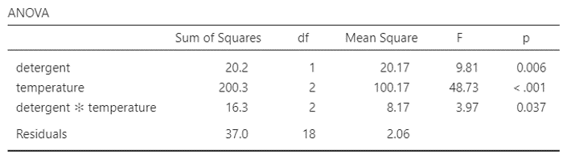
분산분석에서 F-value가 유의하다는 것은 Main effect의 경우 적어도 한 그룹의 평균값이 전체평균값에서 멀어져 있다는 것일 뿐 자세한 모양이나 내용에 대해서는 알 수 없고, Interaction effect 역시 단수하게 있다 업다만 알 수 있을 뿐 자세한 내용은 알 수 없습니다. 따라서 이 경우 사후 검정이 필요합니다.
1.4.2 Main effect에 대한 사후검정
먼저 첫 번째 Main effect에 대한 사후검정 결과를 보겠습니다. 이는 Detergent라는 독립변수에 대한 사후검정으로 이 독립변수는 단 두 개의 그룹을 가지고 있습니다.
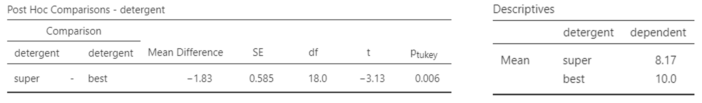
Figure 1.14 은 아주 단순한 결과를 보여줍니다. 여기서는 Tukey의 검정방법만 보이도록 했습니다. 다른 것들도 비슷한 결과이므로 크게 다르지 않습니다. 좌측에서 사후검정결과 유의하다는 결과를 보여줍니다. 왜냐하면 \(P_{Tukey}\) 값이 5%보다 작기 때문입니다. 문제는 이렇게 다르다고만 할 뿐 누가 더 세탁력이 좋은지는 잘 알 수 없습니다. 그래서 우측에 Descriptive statistics를 별도로 추가했습니다. 평균값이 best가 super보다 크다는 것을 알 수 있습니다. 이처럼 사후검정만으로는 사실 쉽게 전체적인 모양을 이해하기 쉽지 않습니다. 다시 평균값을 확인해야 하는 번거로움이 있지요. 그래서 그래프를 그리는 것이 중요합니다.
이제 두 번째 Main effect에 대한 사후검정 결과를 보겠습니다. 이 변수는 Temperature라는 독립변수로 총 3 개의 그룹(Cold/Warm/Hot)을 가지고 있었습니다.
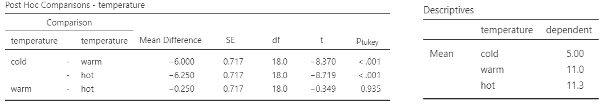
그룹이 3 개이기 때문에 1대 1로 비교하기 위해서는 \(3 \times 2 \div 2 = 3\)으로 총 3 개의 비교가 나옵니다. 비교 결과 Cold vs. Warm 은 유의하게 다르다고 나왔고, Cold vs. Hot 역시 유의하게 다르다고 나왔습니다. 그러나 Warm vs. Hot은 유의하지 않았습니다. 보다 자세한 내용 파악을 하려면 우측의 그룹별 평균값을 보아야 합니다. Cold만 5.0으로 매우 세척효과가 작았고 Warm과 Hot은 11.0, 11.3으로 세척효과가 높으면서 둘은 서로 비슷하게 나타났습니다. 그러나 전체적인 모양이 표의 숫자만으로는 잘 이해가 되지 않습니다. 그래서 그래프가 필요한 것이지요.
1.4.3 Interaction effect에 대한 사후검정
이원배치 분산분석 결과표(Figure 1.13)에서 Interaction effect는 유의하다고 나타났습니다. 그렇다면 세부적으로 어떻게 다르다는 것일까요? 그 결과를 알기 위해 사후검정을 해보았습니다.
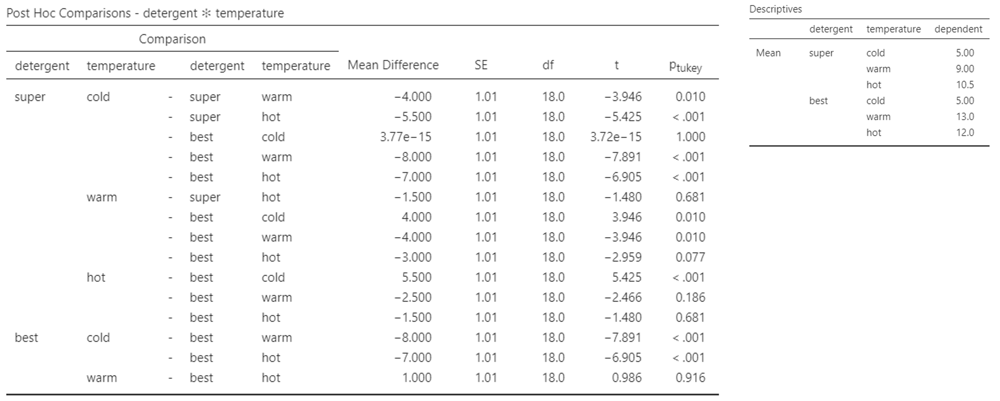
Figure 1.16 에서 보면 상당히 많은 내용이 있습니다. 왜냐하면 총 그룹의 개수가 6개 (\(=2 \times 3\))이기 때문에 1대 1로 비교할 개수가 $ 6 = 15$이기 때문입니다. 총 15개의 비교가 있습니다. 첫 번째 줄만 해석을 해보자면 Super & Cold vs. Super & Warm의 비교는 유의한 차이를 보이다고 되어 있습니다. 이런 방식으로 15개의 결과를 글로 써서 리포팅 하는 것은 사실 상당히 시간소모는 많은 반면 읽는 사람 입장에서는 이해가 쉽지 않습니다. 그래서 Interaction effect가 유의하고 특히나 그룹의 개수가 이 정도가 되면 위와 같은 사후검정 테이블보다는 그래프가 훨씬 더 이해하기 쉽습니다. 그래프로 결과를 해석하면서 중간 중간 필요한 부분에 대한 해석을 할 때 위의 사후검정 결과를 인용하면서 해석하는 것이 보다 현명합니다.
그럼 결과 그래프를 보겠습니다.
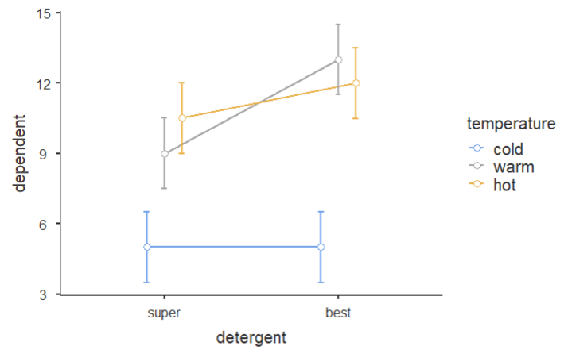
Figure 1.17 은 상당히 직관적이면서도 많은 정보를 줍니다. Jamovi에서 출력한 그래프인데 우선 동그란 점 6 개가 6개의 그룹의 평균값이고 위 아래로 있는 것이 95% confidence interval입니다. 쉽게 말하자면 평균값을 중심으로 95%의 데이터가 저 범위 안에 있다는 의미이기도 합니다. 일반적으로 95% confidence interval이 겹치면 두 평균값은 통계적으로 유의미한 차이를 보이지 않습니다. 즉 유의하지 않다는 의미가 됩니다. 그렇다면 이 그래프를 보면서 세부적인 해석을 해보도록 하겠습니다.
우선 파란색의 가장 아래의 두 점은 Cold 그룹입니다. 한 눈에 보기에도 Cold에서는 Super와 Best가 차이가 없어 보입니다. 정말 그런지는 Figure 1.16 의 사후검정 결과를 확인해보며 알 수 있습니다. Figure 1.16 에서 Super & Cold vs. Best & Cold 는 \(p_{Tukey}\)값이 1.000 입니다. 즉 전혀 유의하지 않다는 의미입니다. 따라서 물이 차가운 경우에는 두 세탁세제의 세척력은 전혀 차이가 나지 않습니다. 재미있는 것은 Hot의 경우에도 Super와 Best의 95% confidence interval이 겹쳐 보입니다. 정말 그런지 Figure 1.16 에서 Super & Hot vs. Best & Hot을 보면 \(p_{Tukey}\)값이 0.681입니다. 그러므로 물의 온도가 뜨거워도 두 세탁세제의 세척력은 유의미한 차이가 없는 것이지요. 그러나 Warm에서는 두 세탁세제의 95% confidence interval이 겹치지 않아 보입니다. Figure 1.16 에서 보면 Super & Warm vs. Best & Warm의 \(p_{Tukey}\)값이 0.010인 것을 확인할 수 있습니다. 그러므로 두 세탁세제의 세척력은 물의 온도가 따뜻한 정도일 때 차이가 나고 이 경우 Best의 세척력이 더 통계적으로 우수하다는 것을 알 수 있습니다.
다른 측면을 보면, Super의 경우 Hot과 Warm은 분명히 95% confidence interval이 겹쳐 보이고 Cold만 확실히 세척력이 낮아 보입니다. 이러한 양상은 Best도 동일합니다. 예를 들어 Super & Hot vs. Super & Warm은 \(p_{Tukey}\)값이 0.681, Best & Hot vs. Best & Warm은 \(p_{Tukey}\)값이 0.916이라는 것을 Figure 1.16 에서 확인할 수 있습니다.
이와 같이 그래프를 먼저 제시하고 명확한 근거를 사후검정 테이블에서 찾아서 세부적인 해석을 하는 것이 보다 이해하기 쉽습니다. 분산분석은 그래서 항상 그래프를 잘 그려야 합니다. 이제 이해가 되시나요?
이제 사실상 이원배치 분산분석이 다 끝났습니다. 다음은 부가적인 내용과 함께 실습이 남아 있습니다. 다들 수고하셨습니다.
1.5 이원배치 분산분석에서 SS의 종류
1.5.1 Sum of Squares의 종류
혹시 Jamovi나 다른 통계 프로그램에서 ANOVA를 돌리다가 아래 화면과 같은 이상한 것을 발견한 분들이 있을지도 모릅니다.
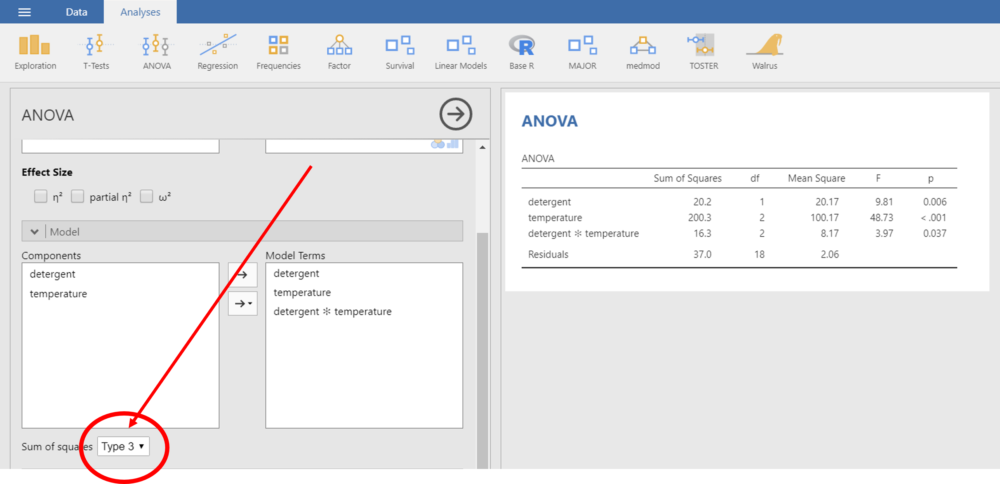
이게 뭘까요?
사실 모르는 게 약일 수도 있습니다만, 이런 걸 보고 그냥 지나치면 공부하는 사람의 자세가 아니라는 게 제 생각입니다. 일단 SS란 Sum of Squares의 약자로 우리가 F-value를 구할 때 먼저 계산했던 분자부분의 SS를 지칭합니다. 이 SS를 계산하는 방법이 세 가지 있다는 것이 결론입니다만, 자세한 계산방법은 여기서 논하지 않겠습니다. 뭐 정확하게 말하자면 저도 너무 어려워서 이해하기 어려울 정도라서요. 보통 Type I / II / III 로 불리는데, 제가 알기론 이러한 것들은 통계학에서 정한 것이 아니고 초기에 SAS라는 프로그램이 만들어질 때 프로그램 개발자들이 넣은 것이라는 이야기가 있습니다. 이게 사실 일원배치 분산분석 (One-way ANOVA)에서는 아무런 차이가 없구요. 독립변수가 2 개 이상인 분산분석 중 각 그룹의 데이터 개수가 동일하면 역시 차이가 없으나 데이터 개수가 다른 경우 달라진다고 합니다. 앞에서 F-value 계산할 때, r 값을 기억하시나요? 세탁세제의 예제에서 각 6개의 그룹 내에서 4 번씩 실험을 해서 \(r = 4\)였었던 그 값을 말합니다. 즉, r값이 동일하면 문제가 없는데 만약 r값이 그룹마다 다를 경우 계산 공식이 달라지겠지요. 그러면 이 경우 Type I / II / III의 종류에 따라서 결과값이 조금씩 달라진다는 것입니다. 각 SS 타입별로 특징을 정리해 보겠습니다.
1.5.2 Type I SS
제 1유형 제곱합이라고 부르며 순차 제곱합이라고도 합니다. 이 유형의 경우 변수를 한 개씩 순차적으로 추가하면서 제곱합을 계산하게 되어 있는데요. 다음의 순서로 계산이 됩니다.
- SS(A) for factor A
- SS(B | A) for factor B
- SS(AB | B, A) for interaction AB
참고로 여기서 factor라고 하는 것은 독립변수를 말합니다. 가끔 이 용어를 뒤에 나올 요인분석의 요인과 헷갈리는 경우가 있는데요. 분산분석에서 독립변수를 오래 전에는 factor라고 불렀습니다. 오래된 영어책을 보실 일이 있다면 아마도 확인하실 수 있을 겁니다. 그래서 오래된 책에서는 분산분석을 아예 Factorial Analysis 라고 부르기도 했습니다.
어쨌거나 위의 순서를 간략히 설명하자면 먼저 A라는 독립변수를 먼저 넣고 SS를 계산하고난 뒤에 A라는 변수를 조건부로 넣어 놓은 채로 B에 대한 SS를 구하고 마지막으로 A와 B를 조건부로 넣어 놓은 채로 Interaction의 SS를 계산한다는 의미입니다. 무엇이 문제냐면 이 경우 변수의 순서에 따라 SS가 변할 수 있다는 것입니다. 그러므로 특별한 목적에 맞춰서 사용하는 것이 좋고 중요한 변수를 먼저 감안한 뒤에 다른 추가 변수를 테스트하려할 경우에 하거나, 변동 불가능한 변수를 먼저 고려한 뒤에 변동 가능한 변수를 넣고 테스트하는 것이 좋습니다. 그러나 일반적으로 많이 쓰이지는 않습니다. 저도 논문에서 이 방법으로 분산분석을 한 것을 본적이 없습니다.
1.5.3 Type II SS
제 2유형 제곱합이라고 부르고, 이 유형의 경우 interaction은 제외하고 계산하는 것이 특징입니다. 계산 순서는 다음과 같습니다.
- SS(A | B) for factor A
- SS(B | A) for factor B
그러므로, Interaction은 유의하지 않다고 전제하고 분산분석을 하는 것이지요.따라서, Interaction이 유의하지 않을 경우 사용하는 것이 좋다고는 합니다만 사실 이것 또한 저는 논문에서 본 적은 없습니다.
1.5.4 Type III SS
제 3유형 제곱합이라고 부르고 수정 제곱합이라고도 합니다. 다른 모든 독립변수들이 모두 이미 모형에 들어있다는 가정하에 마지막에 새로 추가되는 변수의 변동을 계산한 제곱합입니다. 계산 방식은 다음과 같습니다.
- SS(A | B, AB) for factor A
- SS(B | A, AB) for factor B
변수의 순서에 따라 SS가 변화하지 않습니다. 가장 일반적으로 사용되는 SS는 Type III SS입니다. 그러므로 그냥 이 세번째 SS를 사용하면 됩니다. Jamovi에서 default로 셋팅된 SS가 바로 이 세 번째 SS입니다. 그러면 결과를 비교해 보겠습니다.
1.5.5 SS Type별 비교
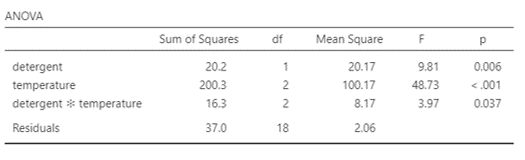
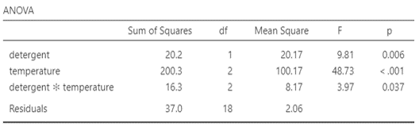
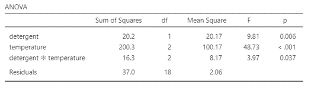
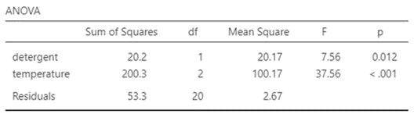
Figure 1.19 의 네 개의 결과를 비교해 보면 모든 결과가 동일하다는 것을 알 수 있습니다. 즉, 각 그룹별로 데이터의 개수가 완벽하게 똑같다면 어떤 것을 사용해도 결과는 차이가 없다는 것입니다.
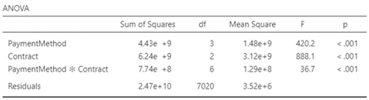
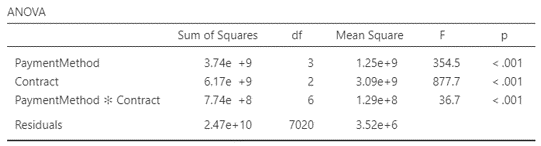
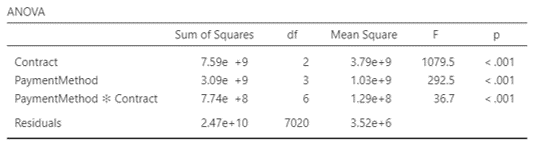
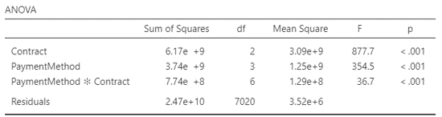
Figure 1.20 를 보면 결과가 다 다르다는 것을 알 수 있습니다. 그렇다면 무엇을 써야 하느냐?
특별한 이유가 없다면, Type III SS를 사용하는 것이 좋습니다. 단, interaction effect가 유의하지 않다면, Type II SS 가 더 좋을 수도 있다고 합니다만 솔직히 저는 개인적으로 논문에서 본적이 없어서 추천하기는 좀 그러네요. Type I SS를 사용할 경우에는, 변수의 순서를 조심해야 하는데 이 역시 추천하지 않습니다. 보통의 통계 프로그램은 제가 알기론 모두 Type III SS가 기본설정으로 되어 있을 것입니다. SAS의 경우 Type I SS와 Type III SS가 둘 다 결과표로 자동 제공 되는데, 이 경우 가급적 Type III SS로 결과 해석하는 것이 좋습니다. 저도 처음에 미국에서 석사시절 SAS로 분석할 때마다 조금씩 당황했던 기억이 있습니다. 궁금증이 해결되셨나요? 그렇다면 이제 실습으로 넘어가 봅시다.
1.6 이원배치 분산분석을 실습해 보자
이번에 사용할 데이터는 앞의 일원배치 분산분석에서 사용했던 데이터 입니다. 더불어 Figure 1.2 의 내용이 우리가 실습할 내용입니다. 항상 말씀드리지만 그냥 눈으로만 보시지 말고 직접 데이터를 다운 받아서 이것 저것 해보시길 권합니다.